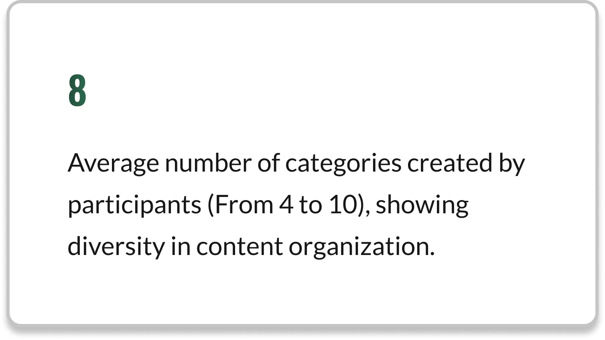
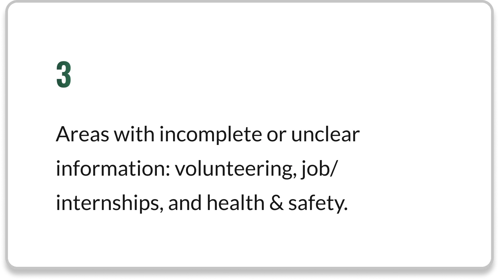
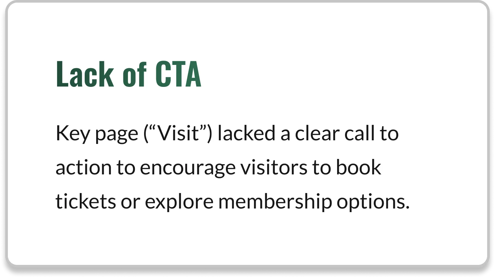
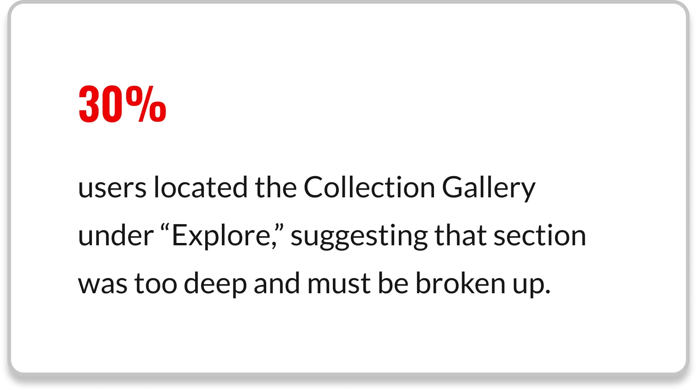
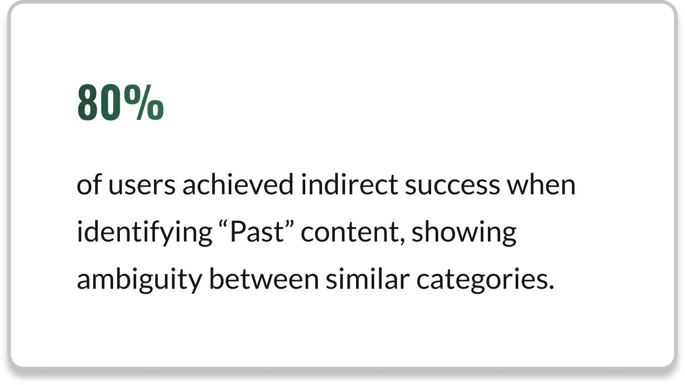
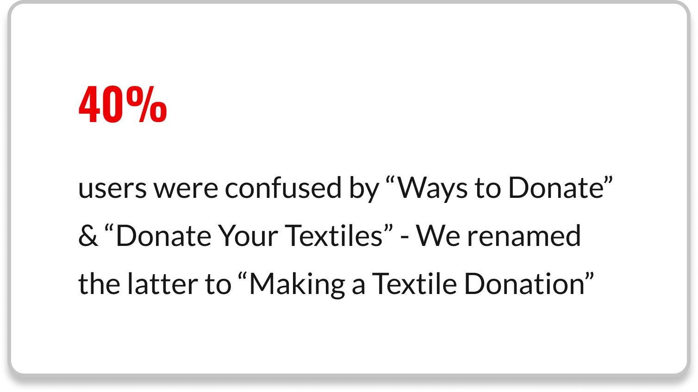

Information Architecture Redesign & Implementation Strategy: Textile Museum of Canada

Presented Nov 2023
Role: UX Researcher (Team Project)
Client: Textile Museum of Canada
IA + Mockups
Summary: Case Study detailing the Redesign of the Textile Museum of Canada Website’s Information Architecture and
Navigation, which was presented to CEO Kirsten Kamper, and Caitlin Donnelly of The Textile Museum.
How can the museum’s website structure better support discovery, engagement, and action?
The Textile Museum of Canada approached us to help redesign the information architecture of its website to better promote key offerings. The focus was on improving the website’s information architecture to make content more accessible, highlight the museum’s values, and serve its target audiences.
During an information session on October 24, 2023, museum staff highlighted key issues: difficulty finding tickets and group tours, challenges accessing archived events, and a desire to showcase post-pandemic hands-on programs.
Success metrics for the redesign include reduced bounce rate and increased online ticketing and donations.
Understanding Users
We began with a card sorting exercise. Eight participants grouped forty pages, from general information to events and programs, into categories that made sense to them. We used Optimal Workshop to collect data and observe patterns in user expectations.
- 1. Results showed shared expectations and areas of confusion.
- 2. Pages like Privacy Policy and Meet the Team consistently grouped under About Us.
- 3. Donation-related pages were separated.
- 4. Ambiguous pages such as TXTilecity and Cloth Clay caused hesitation, showing the need for clearer labeling.
We also conducted a content audit of thirty-two pages.
- Each was evaluated for audience relevance, user expectation, recency, and clarity of calls to action.
- We found outdated information, inconsistent labeling, and unclear guidance for volunteers, job seekers, and museum visitors.
Key Data



Testing the IA
To test the Information Architecture, we conducted tests using OptimalSort and Treejack with 10 participants who completed 6 navigation tasks.
Our goal was to understand how users interpreted and located content within the proposed structure, separate from the website’s existing menu design.
Results



But, was the IA, the real issue on the website?
Our attention moved to the Hamburger Menu on the website's desktop version.
A Hamburger menu is quite common on mobile, but for desktop?
Way back in 2016/17, the Nielsen Norman Group found this:
- 1. A Hamburger menu is “more likely to reduce content discoverability on desktop”.
- 2. Mega Menus are an “excellent design choice for accommodating a large number of options or for revealing lower-level site pages at a glance”.
Therefore we opted to convert the navigation menu into a mega menu.
But, the Mental Models of the Textile Museum’s users are probably made up by now, and a drastic change such as the mega menu could be counter-intuitive.
We were making mid-fidelity wireframes to showcase our IA for the presentation, so I thought it would be better to isolate cause and effect
by implementing the IA separately from the navigation menu’s switch into a mega menu.
This would help us (and the Textile Museum) attribute improvements in user success to the correct intervention.


.webp)